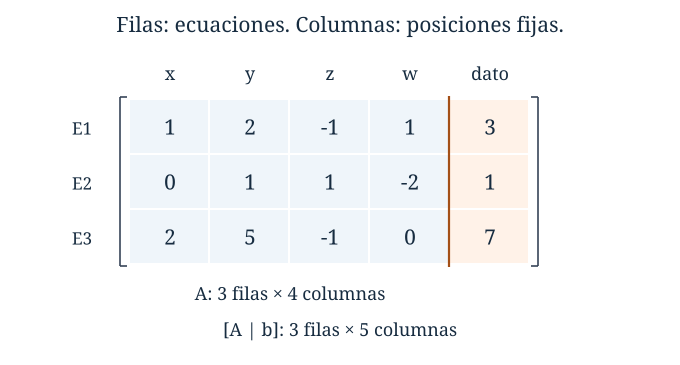
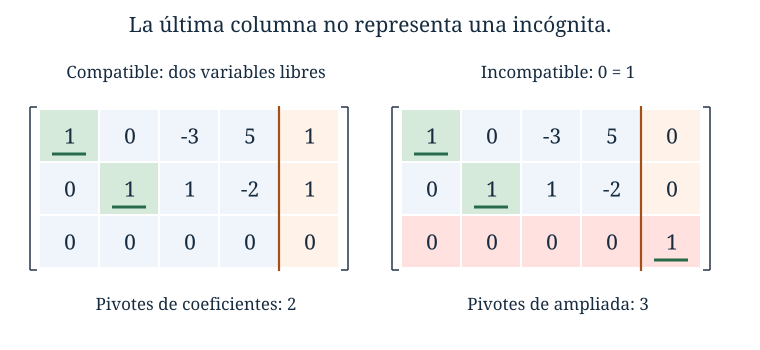
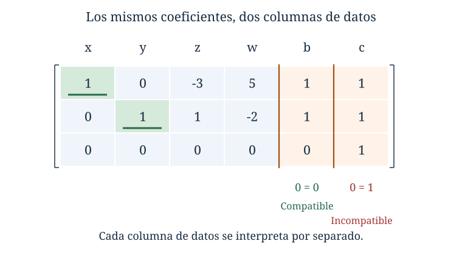

Capítulo 2. Matrices como representación de sistemas
Álgebra para matemáticos · Tomo II
← Capítulo 1 · Índice del tomo II · Obra completa · Capítulo 3 →
Al eliminar incógnitas pasamos buena parte del cálculo copiando las mismas letras. En el sistema
\[ \begin{cases} x+2y-z+w=3,\\ y+z-2w=1,\\ 2x+5y-z=7, \end{cases} \]
los cambios se realizan sobre los coeficientes y los términos independientes; las incógnitas conservan su orden. Podemos registrar toda esa información en una tabla:
\[ \left[\begin{array}{rrrr|r} 1&2&-1&1&3\\ 0&1&1&-2&1\\ 2&5&-1&0&7 \end{array}\right]. \]
La tercera fila recuerda que el coeficiente de \(w\) es cero, aunque la letra no aparezca en la ecuación. El separador distingue los coeficientes de los datos del segundo miembro. Si restamos dos veces la primera fila de la tercera, la última fila se convierte en \((0,1,1,-2\,|\,1)\); restar luego la segunda la anula. La ecuación que parecía aportar un tercer dato era consecuencia de las otras dos.
Esta escritura facilita el cálculo, pero plantea una cuestión que el cálculo solo no decide. Podemos escoger pivotes diferentes, intercambiar filas en momentos distintos y obtener tablas escalonadas de aspecto desigual. Para comparar los resultados necesitamos precisar qué parte de la tabla depende de esas elecciones y qué parte pertenece al problema original.
2.1. Qué información guarda una matriz
Una matriz de tamaño \(m\times n\) sobre un cuerpo \(\mathbb F\) es una tabla rectangular de elementos de \(\mathbb F\), con \(m\) filas ordenadas y \(n\) columnas ordenadas. Su entrada de fila \(i\) y columna \(j\) se denota \(a_{ij}\); escribimos \(A=(a_{ij})\) o
\[ A=\begin{bmatrix} a_{11}&\cdots&a_{1n}\\ \vdots&&\vdots\\ a_{m1}&\cdots&a_{mn} \end{bmatrix}. \]
Las filas son las tuplas \((a_{i1},\ldots,a_{in})\) y las columnas son listas verticales. En \(m\times n\), el número de filas se escribe primero. Dos matrices son iguales si tienen el mismo tamaño y coinciden entrada a entrada. Las posiciones forman parte de la información: intercambiar dos columnas puede producir otra matriz aunque los números presentes sean los mismos.
Trabajaremos con \(m,n\ge1\). Los ejemplos numéricos se calculan sobre \(\mathbb R\), salvo indicación contraria; las definiciones, los resultados y las demostraciones formulados sobre \(\mathbb F\) se mantienen sobre ese cuerpo. La matriz cero \(0_{m\times n}\) tiene todas sus entradas iguales a cero. Una matriz es cuadrada si \(m=n\); en ese caso, las posiciones \((i,i)\) forman su diagonal principal. La matriz identidad \(I_n\) tiene unos en esa diagonal y ceros en las otras entradas. La identidad será importante aquí por su forma reducida; todavía no necesitamos un producto entre matrices.
Para un sistema de \(m\) ecuaciones en \(n\) incógnitas ordenadas, su matriz de coeficientes es \(A=(a_{ij})\). Si \(b\) es la columna de términos independientes, su matriz ampliada es \([A\,|\,b]\), de tamaño \(m\times(n+1)\). En ocasiones escribiremos \(Ax=b\) como abreviatura del sistema; hasta definir el producto matricial, esa escritura significa las igualdades \(\sum_{j=1}^n a_{ij}x_j=b_i\) para \(i=1,\ldots,m\).
La matriz \(A\) permite estudiar todos los sistemas que comparten coeficientes, mientras que \([A\,|\,b]\) selecciona uno de ellos. En el ejemplo inicial \(A\) tiene tamaño \(3\times4\) y la ampliada tiene tamaño \(3\times5\). Cambiar \(7\) por \(8\) en la tercera ecuación conserva \(A\) y cambia \(b\); como veremos, ese cambio basta para destruir la compatibilidad.
La barra no es una columna adicional ni una operación. Es una marca de interpretación: al retirar esa marca queda una matriz ordinaria de cinco columnas. Podemos reducirla como tal, pero al interpretar un sistema sólo las primeras cuatro columnas corresponden a incógnitas. Un pivote en la última columna tendrá un significado distinto.
2.2. Operaciones sobre filas y equivalencia
Sumamos tuplas y las multiplicamos por escalares coordenada a coordenada, como hicimos en C01. Eso permite trasladar las operaciones elementales de las ecuaciones a sus tablas.
Las operaciones elementales por filas son intercambiar dos filas; multiplicar una fila por un escalar no nulo; y reemplazar una fila por ella misma más un múltiplo de otra fila distinta. Se aplican a la fila completa. Escribiremos, por ejemplo, \(F_3\leftarrow F_3-2F_1\).
Dos matrices del mismo tamaño son equivalentes por filas, y escribimos \(A\sim B\), si una se obtiene de la otra mediante una sucesión finita de operaciones elementales. Se permite la sucesión vacía, que deja la matriz intacta.
Cada operación tiene una inversa elemental: un intercambio se deshace intercambiando otra vez; multiplicar por \(c\ne0\) se deshace multiplicando por \(c^{-1}\); y sumar \(cF_j\) se deshace sumando \(-cF_j\), porque la fila \(j\) se conservó. De aquí resulta que la equivalencia por filas es reflexiva, simétrica y transitiva. La última propiedad se verifica concatenando sucesiones de operaciones.
Proposición 2.1. Si \([A\,|\,b]\sim[C\,|\,d]\), los sistemas correspondientes en las mismas incógnitas tienen exactamente las mismas soluciones.
Demostración. Cada operación sobre una fila de la ampliada ejecuta la misma operación sobre ambos miembros de una ecuación. Por la proposición 1.1, conserva su conjunto de soluciones, y lo mismo ocurre con la sucesión finita completa. \(\square\)
La condición “fila completa” evita un error importante. Si restamos una ecuación de otra, también se restan sus términos independientes. En el sistema \(x+y=2\), \(x-y=0\), la segunda menos la primera es \(-2y=-2\). Escribir \(-2y=0\) por operar sólo con \(A\) cambia el problema.
Una matriz de coeficientes puede reducirse sola, pero cualquier columna \(b\) que la acompañe debe recibir después exactamente las mismas operaciones. La afirmación \(A\sim C\) no dice que \(Ax=b\) y \(Cx=b\) tengan las mismas soluciones con el mismo \(b\). Lo que se conserva es el sistema cuando se transportan juntos coeficientes y datos.

2.3. Escalonar y reducir
Una matriz está en forma escalonada por filas si sus filas cero están debajo de las filas no nulas y el primer elemento no nulo de cada fila no nula está estrictamente a la derecha del primer elemento no nulo de la anterior. Esos primeros elementos son los pivotes; sus posiciones y columnas se llaman posiciones y columnas pivote.
La condición implica que debajo de un pivote hay ceros. No exige que el pivote valga uno ni que haya ceros encima. Una matriz cero ya está escalonada y no tiene pivotes.
La eliminación de C01, aplicada a las filas, transforma cualquier matriz en una escalonada equivalente. Se elige un coeficiente no nulo de la columna activa más a la izquierda, se coloca arriba mediante un intercambio si hace falta y se anulan las entradas inferiores. Los ceros de las columnas anteriores se conservan, y el proceso termina después de elegir a lo sumo \(\min(m,n)\) pivotes.
Una matriz está en forma escalonada reducida por filas si está escalonada, cada pivote vale uno y ese uno es la única entrada no nula de su columna. Usaremos la abreviatura forma reducida.
Por ejemplo,
\[ U=\begin{bmatrix} 2&4&-2\\ 0&3&6\\ 0&0&0 \end{bmatrix}, \qquad R=\begin{bmatrix} 1&0&-5\\ 0&1&2\\ 0&0&0 \end{bmatrix} \]
son equivalentes por filas. La primera está escalonada; la segunda, reducida. Para pasar de \(U\) a \(R\), dividimos la segunda fila por tres, restamos cuatro veces esa fila de la primera y dividimos la primera por dos. Los pivotes permanecen en las columnas primera y segunda.
Una matriz reducida puede tener entradas distintas de cero y uno. Los ceros adicionales se exigen en las columnas pivote; las otras columnas conservan números que describen la relación con las incógnitas libres. Tampoco tienen que estar todos los pivotes sobre la diagonal principal: en
\[ \begin{bmatrix} 0&1&4&0&-2\\ 0&0&0&1&3\\ 0&0&0&0&0 \end{bmatrix} \]
las columnas pivote son la segunda y la cuarta.
Teorema 2.2 (existencia de la forma reducida). Toda matriz sobre un cuerpo es equivalente por filas a una matriz escalonada reducida.
Demostración. Primero la escalonamos. Dividimos cada fila no nula por su pivote para convertirlo en uno. Empezamos por el pivote situado más abajo y anulamos las entradas que hay encima, sumando múltiplos de su fila a las superiores. Continuamos hacia arriba.
La fila usada en cada paso tiene ceros a la izquierda de su pivote; por eso no cambia los pivotes anteriores. Al tratar pivotes de abajo arriba, las columnas pivote posteriores ya están limpias. La fila que estamos usando tiene cero en ellas, pues esas columnas fueron limpiadas también en esa fila; por tanto, no deshace el trabajo anterior. Tras un número finito de operaciones, cada columna pivote contiene sólo su uno y la matriz sigue escalonada. \(\square\)
Este procedimiento se conoce como eliminación de Gauss–Jordan. Si sólo queremos resolver un sistema, escalonarlo y sustituir regresivamente puede resultar más económico. La forma reducida exige operaciones adicionales a cambio de dejar explícitas, sin sustituciones pendientes, las relaciones entre las incógnitas.
Para la ampliada inicial, las operaciones \(F_3\leftarrow F_3-2F_1\), \(F_3\leftarrow F_3-F_2\) y \(F_1\leftarrow F_1-2F_2\) dan
\[ \left[\begin{array}{rrrr|r} 1&0&-3&5&1\\ 0&1&1&-2&1\\ 0&0&0&0&0 \end{array}\right]. \]
Leemos \(x=1+3z-5w\), \(y=1-z+2w\). Las incógnitas \(z,w\) son libres; si las llamamos \(s,t\), recuperamos \((1+3s-5t,1-s+2t,s,t)\). La tercera fila expresa la identidad \(0=0\).

2.4. La información que las operaciones conservan
Para demostrar que la forma reducida es única necesitamos algo más que observar varios ejemplos. Las operaciones pueden alterar cada fila de la matriz; sin embargo, conservan todas las tuplas que pueden construirse combinando sus filas.
Si las filas de \(A\) son \(f_1,\ldots,f_m\), llamaremos conjunto de combinaciones de sus filas al conjunto
\[ \mathcal C(A)= \{c_1f_1+\cdots+c_mf_m:c_1,\ldots,c_m\in\mathbb F\}. \]
La definición sólo usa suma de tuplas y producto por escalares; no presupone una teoría de espacios vectoriales. Incluye la tupla cero, escogiendo todos los coeficientes cero. Si todas las filas son cero, ésa es la única combinación.
Lema 2.3. Si \(A\sim B\), entonces \(\mathcal C(A)=\mathcal C(B)\).
Demostración. Después de una operación elemental, cada fila nueva es una combinación de las antiguas. Al sustituir esas expresiones en cualquier combinación de las nuevas filas y distribuir, obtenemos una combinación de las antiguas. Esto prueba una inclusión de conjuntos. La operación inversa expresa también cada fila antigua mediante las nuevas, por lo que prueba la inclusión contraria. La igualdad se conserva a lo largo de la sucesión de operaciones. \(\square\)
El conjunto \(\mathcal C(A)\) contiene muchas tuplas; una forma escalonada permite reconocer dónde puede comenzar una combinación no nula. Supongamos que sus filas no nulas son \(r_1,\ldots,r_k\), con pivotes en \(p_1<\cdots<p_k\). Si una combinación tiene algún coeficiente no nulo, tomemos el primero de ellos, \(c_i\). Las filas posteriores son cero en todas las posiciones anteriores a sus pivotes, y sus pivotes quedan después de \(p_i\). En la posición \(p_i\) la combinación vale \(c_i r_{i,p_i}\ne0\), y antes de ella vale cero. No puede haber una cancelación allí: las filas posteriores todavía no han comenzado.
Lema 2.4. En una matriz escalonada, las posiciones posibles de la primera entrada no nula de una tupla de \(\mathcal C(A)\) son exactamente sus columnas pivote. Además, una combinación de sus filas no nulas es cero sólo si todos sus coeficientes son cero.
Demostración. El argumento anterior muestra que toda combinación con algún coeficiente no nulo comienza en la columna pivote de la primera fila cuyo coeficiente no es cero. Recíprocamente, cada fila no nula es una combinación y comienza en su propio pivote. La misma observación impide que una combinación con algún coeficiente no nulo sea cero. \(\square\)
Es la forma escalonada la que permite identificar la primera contribución que no puede cancelarse. En una matriz arbitraria dos filas pueden comenzar en la misma columna y cancelar sus primeras entradas; por eso el lema necesita su hipótesis.
2.5. Por qué la forma reducida es única
Teorema 2.5 (unicidad). Si \(R\) y \(S\) son matrices escalonadas reducidas, del mismo tamaño, equivalentes por filas, entonces \(R=S\). En consecuencia, toda matriz tiene una única forma escalonada reducida equivalente por filas.
Demostración. Por el lema 2.3, \(\mathcal C(R)=\mathcal C(S)\). El lema 2.4 identifica las columnas pivote de cada una como las posiciones posibles donde empieza una combinación no nula. Esas posiciones dependen sólo del conjunto común de combinaciones, por lo que \(R\) y \(S\) tienen los mismos pivotes \(p_1<\cdots<p_k\) y el mismo número de filas no nulas.
Sean \(r_i,s_i\) sus filas no nulas correspondientes. En las columnas pivote, ambas tienen un uno en \(p_i\) y cero en las otras, por la condición reducida. La diferencia \(r_i-s_i\) tiene, por tanto, cero en todas las columnas pivote. Además pertenece a \(\mathcal C(R)\): \(r_i\) es una combinación de las filas de \(R\) y \(s_i\), al pertenecer a \(\mathcal C(S)=\mathcal C(R)\), también lo es; restar sus expresiones sigue dando una combinación de las filas de \(R\).
Si esa diferencia fuese no nula, el lema 2.4 diría que su primera entrada no nula está en alguna columna pivote. Eso contradice que todas esas entradas sean cero. Luego \(r_i=s_i\) para cada \(i\). Las filas restantes de ambas matrices son cero y también coinciden. Por ello \(R=S\). La existencia del teorema 2.2 completa la conclusión para cualquier matriz. \(\square\)
La prueba distingue dos cuestiones. Las posiciones de los pivotes quedan fijadas por el conjunto de combinaciones; la condición reducida fija además las entradas de cada fila. Dos matrices pueden tener iguales posiciones pivote y seguir siendo distintas si cambian los números de las columnas restantes. La unicidad controla también esos números.
Denotaremos la forma reducida de \(A\) por \(\operatorname{rref}(A)\). El nombre abrevia la expresión inglesa reduced row echelon form; lo usaremos como notación de una matriz determinada, con independencia de qué algoritmo la produzca.
Corolario 2.6. Para matrices del mismo tamaño, \(A\sim B\) si y sólo si \(\operatorname{rref}(A)=\operatorname{rref}(B)\).
Demostración. Si son equivalentes, sus formas reducidas son equivalentes y coinciden por unicidad. Si sus formas reducidas coinciden, reducimos \(A\) a esa matriz común y deshacemos las operaciones que reducen \(B\); la concatenación transforma \(A\) en \(B\). \(\square\)
La forma reducida ofrece así un representante único de cada clase de equivalencia por filas. La existencia de un representante canónico no hace única la ruta de cálculo: distintas sucesiones pueden tener el mismo punto de llegada.
Reconocer la información común de dos tablas
Las combinaciones de filas entraron en la prueba de unicidad para reconocer qué podía sobrevivir a las operaciones. Podemos completar esa relación: conocer todas las combinaciones permite decidir también si dos matrices del mismo tamaño se pueden transformar una en otra.
Proposición 2.6a. Para matrices \(A,B\) del mismo tamaño y sobre el mismo cuerpo, las siguientes condiciones son equivalentes: \(A\sim B\); \(\mathcal C(A)=\mathcal C(B)\); y \(\operatorname{rref}(A)=\operatorname{rref}(B)\).
Demostración. El lema 2.3 prueba que \(A\sim B\) implica igualdad de los conjuntos de combinaciones. El corolario 2.6 ya relaciona la equivalencia por filas con la igualdad de formas reducidas. Falta justificar que la igualdad \(\mathcal C(A)=\mathcal C(B)\) basta para recuperar esa forma común.
Sean \(R=\operatorname{rref}(A)\) y \(S=\operatorname{rref}(B)\). Las operaciones de reducción conservan las combinaciones, así que \(\mathcal C(R)=\mathcal C(S)\). Por el lema 2.4, las primeras posiciones no nulas que pueden tener las tuplas de ese conjunto son exactamente las columnas pivote de \(R\) y de \(S\); ambas matrices tienen, por ello, las mismas columnas pivote y el mismo número de filas no nulas. En cada una de esas columnas sus filas correspondientes \(r_i,s_i\) coinciden: tienen uno en el pivote de la fila y cero en los otros pivotes.
La diferencia \(r_i-s_i\) pertenece al conjunto común de combinaciones y es cero en todas las columnas pivote. Si fuese no nula, el lema 2.4 obligaría a que comenzara en una de esas columnas, lo cual es imposible. Luego \(r_i=s_i\). Las filas restantes son cero en ambas matrices y ocupan las mismas posiciones porque los tamaños coinciden. Así \(R=S\), y el corolario 2.6 da \(A\sim B\). \(\square\)
La condición de tamaño no puede omitirse: una fila adicional que sea combinación de las anteriores no cambia el conjunto \(\mathcal C\), pero ninguna operación elemental crea o elimina filas. La proposición compara matrices que tienen el mismo número de lugares disponibles para escribir esa información.
Para aplicar el resultado no siempre hace falta reducir. Si conocemos una expresión de cada fila de \(B\) como combinación de las de \(A\), obtenemos \(\mathcal C(B)\subseteq\mathcal C(A)\); si también podemos expresar cada fila de \(A\) mediante las de \(B\), la inclusión inversa prueba equivalencia. Una sola inclusión no alcanza. Por ejemplo, las filas de \(\begin{bmatrix}1&0\\0&0\end{bmatrix}\) son combinaciones de las de \(I_2\), pero la tupla \((0,1)\) pertenece a \(\mathcal C(I_2)\) y no al conjunto de combinaciones de la otra matriz. El ejercicio 37 aplica las dos inclusiones a matrices que, aunque parecen distintas, sí son equivalentes.
Sistemas equivalentes y matrices equivalentes por filas
Al trabajar con una ampliada aparecen dos relaciones que conviene distinguir. Dos sistemas son equivalentes cuando tienen el mismo conjunto de soluciones. Dos matrices del mismo tamaño son equivalentes por filas cuando una sucesión de operaciones elementales transforma una en otra. La proposición 2.1 asegura que la segunda relación produce la primera al interpretar matrices ampliadas en las mismas incógnitas; recuperar la segunda a partir de la primera exige más información.
Consideremos las ampliadas reales
\[ R=\left[\begin{array}{rr|r}1&0&0\\0&0&1\end{array}\right], \qquad S=\left[\begin{array}{rr|r}0&1&0\\0&0&1\end{array}\right]. \]
La primera exige \(x=0\) y \(0=1\); la segunda exige \(y=0\) y \(0=1\). Ambos sistemas son incompatibles, de modo que sus conjuntos de soluciones coinciden: los dos son vacíos. Sin embargo, las matrices están reducidas y son distintas. Si fueran equivalentes por filas, el teorema 2.5 las obligaría a coincidir.
La proposición 2.6a permite localizar también la diferencia que las operaciones conservan. Las combinaciones de las filas de \(R\) son las tuplas \((u,0,v)\), mientras que las de \(S\) son \((0,u,v)\), con \(u,v\in\mathbb R\). La tupla \((1,0,0)\) pertenece al primer conjunto y no al segundo. Mirar sólo las soluciones vacías ha borrado esa distinción: conocemos que las exigencias no pueden cumplirse juntas, pero ya no sabemos qué combinaciones de coeficientes y datos estaban escritas.
Por eso, encontrar la misma respuesta «incompatible» para dos sistemas no demuestra equivalencia por filas de sus ampliadas. Tampoco basta conocer sus rangos, que en este ejemplo son dos para ambas ampliadas. Para comparar matrices mediante operaciones debemos comprobar la información más precisa de sus combinaciones de filas o de sus formas reducidas. El conjunto de soluciones responde a la pregunta por las incógnitas; la equivalencia por filas controla además cómo se relacionan las filas que representan el problema.
2.6. El rango como invariante
El rango de una matriz \(A\), denotado \(\operatorname{rg}(A)\), es el número de pivotes de su forma reducida. Para una matriz \(m\times n\) se cumple \(0\le\operatorname{rg}(A)\le\min(m,n)\).
Podemos calcularlo sin completar Gauss–Jordan. Al reducir una matriz ya escalonada, los pivotes se normalizan y se limpian las entradas superiores, pero sus posiciones no cambian. Por tanto, el número de pivotes de cualquier escalonada equivalente a \(A\) coincide con el de su forma reducida única. Ésta es la justificación pendiente de C01: las elecciones de eliminación pueden cambiar los valores de los pivotes, pero no cuántos hay ni sus columnas, con el orden de columnas fijado.
La equivalencia por filas conserva el rango. Su recíproca es falsa: las matrices \(\begin{bmatrix}1&0\\0&0\end{bmatrix}\) y \(\begin{bmatrix}0&1\\0&0\end{bmatrix}\) tienen rango uno y ya están reducidas, pero no son iguales; el corolario 2.6 impide que sean equivalentes.
El rango cero caracteriza a la matriz cero. En efecto, una forma reducida sin pivotes es cero, y una sucesión de operaciones elementales aplicada a una matriz cero sigue dejándola cero, también al invertir la sucesión. El rango cuenta una propiedad de las restricciones y no el número de entradas no nulas: una tabla llena de unos puede tener rango uno.
Teorema 2.7 (criterio de compatibilidad por rangos). El sistema con matriz de coeficientes \(A\) y columna \(b\) es compatible si y sólo si \(\operatorname{rg}(A)=\operatorname{rg}([A\,|\,b])\). Si es compatible, tiene una única solución si y sólo si \(\operatorname{rg}(A)=n\), donde \(n\) es el número de incógnitas.
Demostración. Reduzcamos la matriz ampliada completa. Al retirar su última columna, la tabla restante sigue estando reducida: si había un pivote en la última columna, su fila tenía ceros en todas las anteriores y se vuelve cero; las otras filas conservan sus pivotes y su orden. Además, las operaciones realizadas sobre los coeficientes fueron operaciones elementales sobre \(A\). Esa tabla es, por ello, \(\operatorname{rref}(A)\).
Si la última columna no contiene un pivote, ambas matrices tienen el mismo número de pivotes. No hay fila de la forma \((0,\ldots,0\,|\,c)\) con \(c\ne0\), y el teorema 1.3 construye soluciones. Si contiene un pivote, aparece una fila \((0,\ldots,0\,|\,1)\) y el sistema es incompatible; en ese caso la ampliada tiene un pivote más. Esto prueba la equivalencia de compatibilidad y igualdad de rangos.
En el caso compatible hay \(n-\operatorname{rg}(A)\) incógnitas libres. Ninguna queda libre exactamente cuando el rango es \(n\); entonces las principales se determinan de forma única. Si queda alguna libre, sus distintos valores proporcionan soluciones distintas, porque un cuerpo tiene al menos los elementos \(0\) y \(1\). \(\square\)
En particular, añadir una columna puede aumentar el rango en cero o en uno, y el aumento en la columna \(b\) detecta incompatibilidad. Sobre un cuerpo de \(q\) elementos, un sistema compatible tiene \(q^{n-\operatorname{rg}(A)}\) soluciones; sobre un cuerpo infinito tendrá infinitas si no es único.
Si el sistema inicial termina en \(8\) en lugar de \(7\), la misma eliminación deja una fila \((0,0,0,0\,|\,1)\). El rango de \(A\) sigue siendo dos y el de la ampliada es tres. Las dos primeras ecuaciones admiten la familia ya conocida; la tercera la excluye entera.
2.7. Resolver varios sistemas con una sola reducción
Cuando cambian los datos pero no los coeficientes, repetir la eliminación desde cero desaprovecha información. Para la matriz inicial podemos dejar simbólicos los términos independientes:
\[ \left[\begin{array}{rrrr|r} 1&2&-1&1&b_1\\ 0&1&1&-2&b_2\\ 2&5&-1&0&b_3 \end{array}\right] \sim \left[\begin{array}{rrrr|r} 1&0&-3&5&b_1-2b_2\\ 0&1&1&-2&b_2\\ 0&0&0&0&b_3-2b_1-b_2 \end{array}\right]. \]
Para producir esta tabla se redujo \(A\) y se transportó la columna \(b\) con las mismas operaciones. La tabla completa sólo es una forma reducida de la ampliada cuando la última entrada es cero; si no lo es, aún habría que normalizar ese pivote final y limpiar su columna. Para resolver el sistema no hace falta ese trabajo adicional: la condición de compatibilidad es \(b_3=2b_1+b_2\).
Cuando se cumple, tomar \(z=s\), \(w=t\) produce
\[ (x,y,z,w)= (b_1-2b_2+3s-5t,\;b_2-s+2t,\;s,\;t). \]
La misma cadena de operaciones sirve para varias columnas concretas. En \([A\,|\,b\,|\,c]\) cada columna a la derecha de \(A\) es un término independiente de un sistema diferente, no una nueva incógnita del mismo sistema. Por ejemplo, para \(b=(3,1,7)\) y \(c=(3,1,8)\) obtenemos
\[ \left[\begin{array}{rrrr|r|r} 1&0&-3&5&1&1\\ 0&1&1&-2&1&1\\ 0&0&0&0&0&1 \end{array}\right]. \]
La primera columna de datos es compatible; la segunda, incompatible. La fila inferior se lee por separado: exige \(0=0\) para el sistema con \(b\) y \(0=1\) para el sistema con \(c\). El rango de la matriz con las dos columnas añadidas informa sobre ambas juntas, pero no reemplaza la inspección de cada sistema.

2.8. Existencia para cualquier término independiente
El rango de \(A\) también permite distinguir dos afirmaciones: tener a lo sumo una solución para cada dato y tener al menos una solución para cada dato. Una matriz rectangular puede cumplir una sin cumplir la otra.
Teorema 2.8. Para una matriz \(m\times n\) sobre un cuerpo:
- todos sus sistemas compatibles tienen solución única si y sólo si \(\operatorname{rg}(A)=n\);
- el sistema \(Ax=b\) es compatible para toda columna \(b\in\mathbb F^m\) si y sólo si \(\operatorname{rg}(A)=m\);
- para toda columna \(b\) hay una única solución si y sólo si \(m=n=\operatorname{rg}(A)\).
Demostración. Si el rango es \(n\), el teorema 2.7 da unicidad en cada sistema compatible. Si es menor, el sistema homogéneo es compatible y tiene alguna incógnita libre, por lo que sus soluciones no son únicas. Esto prueba la primera afirmación.
Para la segunda, fijemos una sucesión que reduzca \(A\) y apliquémosla también a \(b\). Si el rango es \(m\), no queda ninguna fila cero de coeficientes; cualquier columna transformada acompaña entonces un sistema compatible, porque no puede aparecer una contradicción de coeficientes nulos.
Si el rango es menor que \(m\), la última fila de \(\operatorname{rref}(A)\) es cero. Elijamos en el sistema reducido una columna \(d\) cuya última entrada sea uno y las otras cero. Ese sistema es incompatible. Para encontrar un dato original que lo produzca, aplicamos a \(d\) las operaciones inversas, en orden inverso, de la sucesión fijada; obtenemos una columna \(b\). Al reducir \([A\,|\,b]\) mediante la sucesión original, reaparece exactamente \([\operatorname{rref}(A)\,|\,d]\), y por ello el sistema original también es incompatible. Queda demostrada la necesidad.
Tener exactamente una solución para todo dato reúne las dos primeras propiedades; exige rango \(n\) y rango \(m\), y por tanto \(m=n=\operatorname{rg}(A)\). Esa condición también basta. \(\square\)
Por ejemplo, \(x+z=b_1\), \(y+z=b_2\) siempre admite soluciones y deja libre \(z\). En cambio, \(x=b_1\), \(y=b_2\), \(x+y=b_3\) admite a lo sumo una pareja, pero sólo existe si \(b_3=b_1+b_2\). La primera matriz tiene rango igual al número de filas; la segunda, al número de columnas.
Hasta dónde conviene reducir
Las operaciones necesarias dependen de qué queremos averiguar. Consideremos la familia real de ampliadas
\[ M_h=\left[\begin{array}{rrr|r} 2&4&-2&6\\ 4&11&-1&15\\ 2&7&1&h \end{array}\right]. \]
Las instrucciones \(F_2\leftarrow F_2-2F_1\), \(F_3\leftarrow F_3-F_1\) y luego \(F_3\leftarrow F_3-F_2\), siempre con las filas actuales, producen
\[ U_h=\left[\begin{array}{rrr|r} 2&4&-2&6\\ 0&3&3&3\\ 0&0&0&h-9 \end{array}\right]. \]
Si únicamente queremos decidir compatibilidad, el cálculo ya terminó: para \(h\ne9\) la última fila exige \(0=h-9\) y refuta cualquier solución; para \(h=9\) las dos filas restantes permiten resolver las principales después de elegir la libre. Normalizar todos los pivotes y limpiar sus columnas no cambiaría ninguna de esas conclusiones. También conocemos el rango de coeficientes, que es dos para todo \(h\), y el de la ampliada, que vale dos cuando \(h=9\) y tres en los demás casos.
Para describir las soluciones en el caso compatible podemos seguir desde esta misma tabla. La segunda ecuación dice \(y+z=1\) después de dividir por tres. Elegir \(z=t\) da \(y=1-t\); la primera ecuación exige entonces \(2x+4(1-t)-2t=6\), de donde \(x=1+3t\). Todas las soluciones son
\[ (x,y,z)=(1+3t,1-t,t),\qquad t\in\mathbb R. \]
Cada terna de esa forma satisface el sistema escalonado y, por equivalencia, el original. Recíprocamente, cualquier solución tiene algún valor \(t=z\) que determina las otras dos coordenadas. La sustitución regresiva proporciona así una descripción completa sin haber reducido la ampliada hasta el final.
Si queremos comparar \(M_9\) con otra matriz mediante sus formas reducidas, conviene hacer visibles las relaciones que todavía están mezcladas en la primera fila. Dividimos la segunda por tres, restamos cuatro veces esa fila de la primera y dividimos la primera por dos. Obtenemos
\[ \operatorname{rref}(M_9)= \left[\begin{array}{rrr|r} 1&0&-3&1\\ 0&1&1&1\\ 0&0&0&0 \end{array}\right]. \]
La parametrización se lee directamente, y esta matriz ofrece además un objeto único con el que comparar la reducción de otra ampliada del mismo tamaño. La tabla escalonada era suficiente para resolver; la forma reducida permite aplicar inmediatamente el criterio del corolario 2.6.
Para \(h\ne9\) también existe una forma reducida única, aunque ya sepamos que no hay soluciones. Normalizar la última fila de \(U_h\) y limpiar su columna, junto con la reducción de los coeficientes, da
\[ \operatorname{rref}(M_h)= \left[\begin{array}{rrr|r} 1&0&-3&0\\ 0&1&1&0\\ 0&0&0&1 \end{array}\right] \qquad(h\ne9). \]
En esta familia todas las ampliadas incompatibles son equivalentes por filas, porque tienen exactamente esa forma reducida. La conclusión proviene de la reducción común y no sólo de que sus sistemas sean incompatibles; las matrices \(R,S\) de §2.5 mostraban que la incompatibilidad por sí sola no basta.
La elección del punto de parada exige conservar la razón de lo que ya se sabe. Una contradicción decide que el sistema es imposible; una tabla escalonada sin contradicciones permite elegir parámetros y resolver; una forma reducida fija un representante para comparar matrices. Continuar el cálculo es útil cuando proporciona la información que la pregunta todavía necesita.
2.9. Parámetros, cuerpos y límites de la representación
Para la familia real
\[ A_t=\begin{bmatrix}1&2&1\\2&4&t\end{bmatrix}, \]
la operación \(F_2\leftarrow F_2-2F_1\) produce la segunda fila \((0,0,t-2)\). Si \(t=2\), el rango es uno y la forma reducida tiene primera fila \((1,2,1)\). Si \(t\ne2\), normalizamos el pivote de la tercera columna y lo eliminamos de la primera: la forma reducida tiene filas \((1,2,0)\) y \((0,0,1)\), y rango dos. La fórmula de esta última reducción requiere dividir por \(t-2\); no puede evaluarse después en \(t=2\) como si siguiera siendo válida.
El cuerpo también importa. La matriz con entradas enteras \(\begin{bmatrix}1&1\\1&-1\end{bmatrix}\) tiene rango dos sobre \(\mathbb Q\) o \(\mathbb R\), porque al restar filas aparece un pivote \(-2\). Si interpretamos sus entradas módulo dos, \(-1=1\) y ambas filas coinciden: su rango sobre \(\mathbb F_2\) es uno. Se trata de interpretar los enteros en cuerpos con distinta aritmética.
Cuando un cuerpo está contenido en otro, la situación es distinta. Una matriz racional puede reducirse utilizando únicamente escalares racionales. La forma reducida obtenida sigue siendo reducida sobre \(\mathbb R\) o \(\mathbb C\), y las operaciones siguen siendo válidas; por unicidad es la misma forma reducida. Su rango no cambia. Una columna de datos racionales compatible sobre \(\mathbb C\) ya era compatible sobre \(\mathbb Q\): basta escoger cero para las incógnitas libres en la forma reducida. Las soluciones complejas adicionales, cuando las hay, proceden de permitir parámetros complejos.
Las filas de una ampliada pueden cambiarse para conservar soluciones; las columnas de incógnitas no tienen ese papel. Intercambiar las columnas de \(x\) y \(y\) en la ecuación \(x+2y=5\) produce \(2x+y=5\), cuyo conjunto de parejas ordenadas es diferente. Si intercambiamos también los nombres de las coordenadas podemos relacionar ambos problemas, pero debemos declarar esa correspondencia. Dejar fijos los nombres y mover los coeficientes altera la representación del sistema.
La forma reducida permite comparar tablas mediante una sucesión controlada de operaciones. Su unicidad fija los pivotes y las relaciones restantes; el rango retiene cuántas restricciones sobreviven. La tabla ampliada añade la información necesaria para decidir si los datos respetan esas restricciones y, cuando lo hacen, para leer todas las soluciones.
2.10. Ejercicios
Salvo indicación contraria, trabajar sobre \(\mathbb R\). Al calcular una forma reducida, registrar operaciones suficientes para reconstruir el procedimiento. Al resolver sistemas, justificar también que se obtuvieron todas las soluciones.
Representar, reducir e interpretar
1. Sea \(A=\begin{bmatrix}2&0&-1\\4&3&5\end{bmatrix}\). Indicar tamaño, entradas \(a_{13},a_{22}\), segunda fila y tercera columna. Explicar por qué no puede ser igual a una matriz \(3\times2\) con los mismos seis números.
2. Escribir la matriz de coeficientes y la ampliada de \(y-2z=3\), \(2x+z=1\), \(x-y=0\), en el orden \(x,y,z\). Reconstruir las ecuaciones desde la ampliada e indicar sus tamaños.
3. Clasificar como no escalonada, escalonada no reducida o reducida: \(P=\begin{bmatrix}1&2\\0&3\end{bmatrix}\), \(Q=\begin{bmatrix}0&1&2\\0&0&0\end{bmatrix}\), \(U=\begin{bmatrix}0&0\\1&0\end{bmatrix}\) y \(V=\begin{bmatrix}1&2&0\\0&0&1\end{bmatrix}\).
4. Calcular forma reducida y rango de \(\begin{bmatrix}1&2&3\\2&4&6\end{bmatrix}\). Resolver el sistema homogéneo correspondiente.
5. Reducir \(\begin{bmatrix}0&1&2\\1&0&-1\\1&1&1\end{bmatrix}\). Indicar columnas pivote y describir las soluciones homogéneas.
6. Reducir \(\begin{bmatrix}1&2&0&1\\0&1&1&2\\2&5&1&4\end{bmatrix}\). Explicar la relación entre la tercera fila y las anteriores y parametrizar el sistema homogéneo.
7. Reducir \(\left[\begin{array}{rrr|r}1&1&1&2\\2&2&2&5\end{array}\right]\). Comparar los rangos de coeficientes y ampliada y resolver el problema de compatibilidad.
8. Resolver la ampliada \(\left[\begin{array}{rrr|r}1&0&2&3\\0&1&-1&1\\2&-1&5&5\end{array}\right]\). Dar su forma reducida.
9. Resolver \(\left[\begin{array}{rrrr|r}0&1&2&-1&4\\0&0&1&3&2\end{array}\right]\). Explicar por qué la primera incógnita es libre aunque esté a la izquierda de todos los pivotes.
10. Reducir \(\left[\begin{array}{rr|r}1&2&3\\2&4&6\\3&6&10\end{array}\right]\). Indicar qué expresa cada fila de la forma reducida y decidir si una fila cero elimina la contradicción de otra.
11. Resolver sobre \(\mathbb Q\) la ampliada \(\left[\begin{array}{rr|r}1/2&1/3&1\\1&-1/3&0\end{array}\right]\), usando fracciones exactas.
12. Hallar la forma reducida de \(\begin{bmatrix}1&1\\1&-1\end{bmatrix}\) sobre \(\mathbb Q\) y al interpretar sus entradas en \(\mathbb F_2\). Comparar rangos y soluciones homogéneas.
Parámetros y control del procedimiento
13. Para \(A_t=\begin{bmatrix}1&2&1\\2&4&t\end{bmatrix}\), determinar forma reducida, rango y columnas pivote para todos los valores reales de \(t\).
14. Para la ampliada \(\left[\begin{array}{rrr|r}1&2&1&b_1\\2&4&t&b_2\end{array}\right]\), clasificar compatibilidad y dar todas las soluciones para cada caso.
15. Reducir la matriz del ejercicio 4 por dos rutas: una anulando primero la segunda fila y otra intercambiando primero las filas. Explicar qué parte del resultado debe coincidir y qué parte del trabajo puede diferir.
16. Una matriz se transforma, en este orden, por \(F_2\leftarrow F_2-3F_1\), intercambio de \(F_1,F_2\), y \(F_2\leftarrow F_2/2\). Escribir la sucesión que deshace el cambio. ¿Puede ejecutarse esta descripción en característica dos?
17. Demostrar con detalle que la equivalencia por filas es una relación de equivalencia sobre las matrices de un tamaño fijo.
18. Para \(f_1=(1,2,0)\), \(f_2=(0,1,1)\) y \(g_1=f_1-2f_2\), \(g_2=f_2\), expresar una combinación arbitraria de los \(g_i\) mediante los \(f_i\), y viceversa. Usarlo para verificar el lema 2.3 en este caso.
19. Si las filas no nulas de una escalonada tienen pivotes en las columnas \(2,4,5\), ¿dónde puede comenzar una combinación no nula? Demostrar que todos esos comienzos son posibles. Dar dos filas no escalonadas cuya diferencia empiece después de los comienzos de ambas.
20. Demostrar que reducir una matriz ya escalonada no cambia sus columnas pivote. Explicar por qué esto permite calcular el rango deteniéndose antes de limpiar las entradas superiores.
Pruebas, ejemplos y contraejemplos
21. Describir todas las matrices reducidas \(2\times2\) sobre un cuerpo. Si el cuerpo tiene \(q\) elementos, ¿cuántas hay?
22. Construir dos matrices reducidas \(2\times3\) con iguales columnas pivote y rango que no sean equivalentes por filas. Justificar la respuesta.
23. Interpretar como ampliadas las matrices \(\begin{bmatrix}1&0&0\\0&0&1\end{bmatrix}\) y \(\begin{bmatrix}0&1&0\\0&0&1\end{bmatrix}\). Probar que sus sistemas tienen el mismo conjunto de soluciones, pero las ampliadas no son equivalentes por filas. ¿Contradice esto la proposición 2.1?
24. Intercambiar las columnas de coeficientes en \([1\ \ 2\,|\,5]\). Exhibir una pareja que resuelva el sistema anterior y no el nuevo. Describir la correspondencia entre sus soluciones si se intercambian también las coordenadas.
25. En \(x+y=2\), \(x-y=0\), se aplica \(F_2\leftarrow F_2-F_1\) sólo a los coeficientes y se conserva por error el término independiente cero. Resolver el sistema erróneo y el correcto, y localizar la información perdida.
26. Probar que una matriz no nula no puede ser equivalente por filas a la matriz cero. Demostrar que añadir al final una fila cero no cambia el número de pivotes, aunque la matriz resultante tenga otro tamaño.
27. Para \(A=\begin{bmatrix}1&0&1\\0&1&1\end{bmatrix}\) y \(B=\begin{bmatrix}1&0\\0&1\\1&1\end{bmatrix}\), estudiar existencia y unicidad para todos los términos independientes. Explicar la diferencia entre rango máximo por filas y por columnas.
28. Reducir conjuntamente los dos sistemas con coeficientes \(\begin{bmatrix}1&2\\3&5\end{bmatrix}\) y términos independientes \((1,2)\) y \((0,1)\). Dar las dos soluciones y comprobarlas.
Síntesis y transferencia
29. Para \(A=\begin{bmatrix}1&2&-1&1\\0&1&1&-2\\2&5&-1&0\end{bmatrix}\), dar una condición necesaria y suficiente sobre \(b_1,b_2,b_3\) para que \(Ax=b\) sea compatible. Parametrizar todas las soluciones y justificar la necesidad y suficiencia.
30. Aplicar la reducción anterior simultáneamente a \(b=(3,1,7)\) y \(c=(3,1,8)\). Explicar por qué una contradicción en la columna de \(c\) no invalida las soluciones del sistema con \(b\).
31. Sea \(\mathbb K\) un subcuerpo de \(\mathbb F\). Probar que una matriz con entradas en \(\mathbb K\) tiene la misma forma reducida y rango al considerarla sobre \(\mathbb F\). Si sus datos \(b\) también están en \(\mathbb K\), probar que la compatibilidad sobre \(\mathbb F\) implica compatibilidad sobre \(\mathbb K\). Explicar por qué los conjuntos de soluciones pueden ser distintos.
32. Hallar todos los polinomios reales \(p(t)=a_0+a_1t+a_2t^2+a_3t^3\) con \(p(0)=1\), \(p(1)=2\) y \(p(-1)=0\). Construir y reducir su ampliada, e interpretar el parámetro libre.
33. Usando el razonamiento del teorema 2.7, probar que añadir una columna a una matriz aumenta su rango a lo sumo en uno y nunca lo disminuye. Deducir que añadir \(k\) columnas aumenta el rango a lo sumo en \(k\).
34. Contar las matrices reducidas \(2\times3\) de rango uno sobre un cuerpo de \(q\) elementos. Separar los casos según la columna pivote y explicar por qué no hay duplicaciones.
35. Un sistema tiene ampliada reducida \(\left[\begin{array}{rrr|r}1&0&2&3\\0&1&-1&1\\0&0&0&0\end{array}\right]\). Se añade \(ax+by+cz=d\). Determinar cuándo conserva todas las soluciones, cuándo selecciona exactamente una y cuándo deja el conjunto vacío.
36. Se afirma que la forma reducida real de \(\begin{bmatrix}1&1&0\\0&1&1\end{bmatrix}\) es \(\begin{bmatrix}1&0&1\\0&1&1\end{bmatrix}\). Encontrar el error y refutar el resultado mediante una solución homogénea. Explicar qué sucede con la misma afirmación al interpretar las entradas módulo dos.
Combinaciones de filas y elección del procedimiento
37. Sean
\[ A=\begin{bmatrix}1&2&1\\0&1&-1\\1&3&0\end{bmatrix}, \qquad B=\begin{bmatrix}2&1&5\\1&1&2\\0&0&0\end{bmatrix}. \]
Probar que son equivalentes por filas expresando cada fila de una matriz como combinación de las de la otra, sin comenzar por un escalonamiento. Calcular después su forma reducida común. Explicar qué parte de la justificación faltaría si sólo se hubieran expresado las filas de \(B\) mediante las de \(A\).
38. Para datos reales \(a,b,c\), estudiar
\[ N=\left[\begin{array}{rrr|r} 1&-1&2&a\\2&1&1&b\\3&0&3&c \end{array}\right]. \]
Detener primero la eliminación en cuanto permita decidir compatibilidad y rangos. Cuando existan soluciones, obtenerlas por sustitución regresiva. Calcular finalmente la forma reducida completa en cada caso y explicar qué información adicional permite usar para comparar \(N\) con otras matrices del mismo tamaño.
2.11. Soluciones razonadas
1. El tamaño es \(2\times3\), \(a_{13}=-1\), \(a_{22}=3\), la segunda fila es \((4,3,5)\) y la tercera columna es \((-1,5)\) escrita verticalmente. La igualdad de matrices exige el mismo conjunto de posiciones; una tabla \(3\times2\) organiza las entradas en posiciones distintas. Coincidir en la lista de números no basta para igualdad.
2. En el orden fijado,
\[ A=\begin{bmatrix}0&1&-2\\2&0&1\\1&-1&0\end{bmatrix}, \qquad [A\,|\,b]=\left[\begin{array}{rrr|r} 0&1&-2&3\\2&0&1&1\\1&-1&0&0 \end{array}\right]. \]
Los tamaños son \(3\times3\) y \(3\times4\). Multiplicar cada entrada de una fila, salvo la última, por la incógnita de su columna y sumarlas reconstruye \(0x+y-2z=3\), \(2x+0y+z=1\) y \(x-y+0z=0\). Los ceros sostienen la posición de las incógnitas que no se escriben en las ecuaciones abreviadas.
3. \(P\) es escalonada y no reducida: su segundo pivote vale tres y hay un dos encima. \(Q\) es reducida, con pivote en la segunda columna; el dos de la tercera columna no infringe ninguna condición. \(U\) no es escalonada porque una fila cero precede a una no nula. \(V\) es reducida con pivotes en columnas primera y tercera; el dos está en una columna no pivote.
4. Restar dos veces la primera fila de la segunda produce
\[ R=\begin{bmatrix}1&2&3\\0&0&0\end{bmatrix}. \]
Ya está reducida y su rango es uno. El homogéneo es \(x+2y+3z=0\): con \(y=s\), \(z=t\), todas las soluciones son \((-2s-3t,s,t)\). La ecuación determina \(x\) de forma única para cada elección de las libres, y toda solución recupera sus parámetros como \(s=y,t=z\).
5. Intercambiar las dos primeras filas da \((1,0,-1)\) arriba y \((0,1,2)\) debajo. La tercera menos las dos primeras se anula, porque \((1,1,1)=(1,0,-1)+(0,1,2)\). La forma reducida es
\[ \begin{bmatrix}1&0&-1\\0&1&2\\0&0&0\end{bmatrix}. \]
Los pivotes están en columnas primera y segunda, y el rango es dos. El homogéneo exige \(x=z\), \(y=-2z\); sus soluciones son \((t,-2t,t)\), con \(t\in\mathbb R\).
6. La tercera fila es dos veces la primera más la segunda. Las instrucciones \(F_3\leftarrow F_3-2F_1\) y \(F_3\leftarrow F_3-F_2\) la anulan. Después \(F_1\leftarrow F_1-2F_2\) da
\[ R=\begin{bmatrix}1&0&-2&-3\\0&1&1&2\\0&0&0&0\end{bmatrix}. \]
Tiene rango dos. Las incógnitas tercera y cuarta pueden elegirse \(s,t\), y las otras quedan \(x_1=2s+3t\), \(x_2=-s-2t\). Sustituir produce cero en las tres ecuaciones; la tercera no añade ninguna condición por la combinación de filas señalada.
7. \(F_2\leftarrow F_2-2F_1\) produce \((0,0,0\,|\,1)\). Limpiar la entrada dos que queda arriba de ese pivote mediante \(F_1\leftarrow F_1-2F_2\) da
\[ \left[\begin{array}{rrr|r}1&1&1&0\\0&0&0&1\end{array}\right]. \]
El rango de coeficientes es uno y el de la ampliada es dos. La última fila representa \(0=1\), así que no existe solución. El cero que aparece en el término independiente de la primera fila tras la reducción completa no borra esa contradicción.
8. La tercera fila es dos veces la primera menos la segunda, también en el término independiente: \(2(3)-1=5\). Se anula con esas operaciones y las otras ya están reducidas. Resulta
\[ \left[\begin{array}{rrr|r}1&0&2&3\\0&1&-1&1\\0&0&0&0\end{array}\right]. \]
Con \(z=t\) se obtiene \((x,y,z)=(3-2t,1+t,t)\). Las dos primeras ecuaciones se cumplen por construcción y la tercera es su combinación, lo que prueba suficiencia; cualquier solución debe tener esa forma por las dos primeras.
9. La operación \(F_1\leftarrow F_1-2F_2\) produce
\[ \left[\begin{array}{rrrr|r}0&1&0&-7&0\\0&0&1&3&2\end{array}\right]. \]
Las columnas pivote son segunda y tercera. Con \(x_1=s\), \(x_4=t\), quedan \(x_2=7t\) y \(x_3=2-3t\). Toda solución es \((s,7t,2-3t,t)\); la primera coordenada no aparece en ninguna ecuación porque su columna es cero. La libertad no depende de estar a la derecha de todos los pivotes.
10. Restar \(2F_1\) de \(F_2\) y \(3F_1\) de \(F_3\) da una fila cero y una fila \((0,0\,|\,1)\). Intercambiarlas coloca la contradicción arriba de la fila cero. Restar tres veces la fila contradictoria de la primera limpia su término independiente. La forma reducida es
\[ \left[\begin{array}{rr|r}1&2&0\\0&0&1\\0&0&0\end{array}\right]. \]
Las filas representan \(x+2y=0\), \(0=1\) y \(0=0\). El sistema exige las tres a la vez; una identidad no vuelve verdadera una contradicción. Los rangos son uno y dos y no hay solución.
11. Multiplicar la primera fila por dos produce \((1,2/3\,|\,2)\). Restarla de la segunda da \((0,-1\,|\,-2)\). Multiplicar esta fila por \(-1\) y restar \(2/3\) de ella a la primera produce \(\left[\begin{array}{rr|r}1&0&2/3\\0&1&2\end{array}\right]\). La solución es \((2/3,2)\), racional. Sus miembros izquierdos valen \(1/3+2/3=1\) y \(2/3-2/3=0\). Los dos pivotes dejan ninguna variable libre.
12. Sobre \(\mathbb Q\), restar la primera fila de la segunda da \((0,-2)\); dividirla por \(-2\) y limpiar arriba lleva a \(I_2\), rango dos y sólo solución homogénea cero. Sobre \(\mathbb F_2\), las filas originales son ambas \((1,1)\); restarlas deja cero y la forma reducida es \(\begin{bmatrix}1&1\\0&0\end{bmatrix}\). Su rango es uno y el homogéneo tiene \((0,0)\) y \((1,1)\). La división por \(-2\) no está disponible en ese cuerpo porque ese elemento es cero.
13. Tras \(F_2\leftarrow F_2-2F_1\), la segunda fila es \((0,0,t-2)\). Si \(t=2\), la forma reducida es \(\begin{bmatrix}1&2&1\\0&0&0\end{bmatrix}\) y el rango uno, con pivote en columna primera. Si \(t\ne2\), dividir la segunda por \(t-2\) y restarla de la primera da \(\begin{bmatrix}1&2&0\\0&0&1\end{bmatrix}\), rango dos y pivotes en primera y tercera. Los casos cubren todos los parámetros y sólo se divide bajo la hipótesis apropiada.
14. La segunda fila menos dos veces la primera es \((0,0,t-2\,|\,b_2-2b_1)\). Para \(t\ne2\), queda \(z=(b_2-2b_1)/(t-2)\); tomando \(y=s\), la primera da \(x=b_1-2s-z\). El sistema es compatible para todo \(b_1,b_2\) y tiene una variable libre. Si \(t=2\), es compatible exactamente cuando \(b_2=2b_1\); en ese caso \(y=s,z=u\) son libres y \(x=b_1-2s-u\). Si \(t=2\) y \(b_2\ne2b_1\), la última fila es una contradicción. La primera ecuación y la diferencia de ecuaciones son equivalentes al sistema original, por lo que las familias son completas.
15. La primera ruta usa \(F_2\leftarrow F_2-2F_1\) y llega directamente a \(\begin{bmatrix}1&2&3\\0&0&0\end{bmatrix}\). En la segunda intercambiamos filas, dividimos la primera por dos y restamos esa primera de la segunda; llegamos a la misma tabla. Difieren las operaciones y los pivotes intermedios, que en la segunda ruta empiezan por dos. La forma reducida y las columnas pivote finales deben coincidir por el teorema 2.5.
16. Se deshace primero el último paso: multiplicar \(F_2\) por dos. Luego se intercambian \(F_1,F_2\) y finalmente se ejecuta \(F_2\leftarrow F_2+3F_1\). Cada instrucción utiliza las filas actuales y revierte la anterior en orden inverso. En característica dos la operación original \(F_2/2\) no está definida; por eso la descripción completa no constituye allí una sucesión válida de operaciones elementales.
17. Para reflexividad basta la sucesión vacía. Si una sucesión lleva \(A\) a \(B\), invertir cada operación y ejecutarlas en orden inverso lleva \(B\) a \(A\), lo que prueba simetría. Si una sucesión lleva \(A\) a \(B\) y otra lleva \(B\) a \(C\), ejecutarlas consecutivamente lleva \(A\) a \(C\) y sigue siendo finita; esto prueba transitividad. El tamaño no cambia en ninguna operación, de modo que todo sucede en el conjunto de matrices fijado.
18. Para escalares \(u,v\),
\[ ug_1+vg_2=u(f_1-2f_2)+vf_2=uf_1+(v-2u)f_2. \]
En sentido inverso, \(f_1=g_1+2g_2\) y \(f_2=g_2\), por lo que \(af_1+bf_2=ag_1+(2a+b)g_2\). Las dos identidades muestran que cada combinación de una pareja es combinación de la otra, sin afirmar que deban coincidir los coeficientes usados.
19. Los únicos comienzos posibles son las columnas \(2,4,5\): la primera fila que tenga coeficiente no nulo en una combinación aporta una entrada no cancelable en su pivote. Cada comienzo se realiza tomando sólo la fila correspondiente con coeficiente uno. Sin escalonamiento, \(f=(1,0)\) y \(g=(1,1)\) comienzan ambas en columna primera, pero \(g-f=(0,1)\) comienza en la segunda. La coincidencia de comienzos permite la cancelación que el lema excluye.
20. Normalizar una fila por un escalar no nulo conserva dónde empieza. Limpiar encima de un pivote usa una fila que es cero antes de él; por tanto, no modifica el pivote anterior de una fila superior. Al proceder desde abajo, tampoco altera las columnas pivote posteriores ya limpias, pues la fila auxiliar tiene cero en ellas. Ninguna fila no nula se anula: conserva su pivote. La reducción mantiene todas las posiciones y su cantidad; por unicidad esa cantidad ya es el rango, sin necesidad de hacer las limpiezas superiores para contarlo.
21. En rango cero sólo está \(0_{2\times2}\). En rango dos los pivotes deben ocupar columnas primera y segunda y ambas deben estar limpias, de modo que sólo está \(I_2\). En rango uno la fila no nula ocupa el primer lugar. Si su pivote está en la primera columna, la matriz es \(\begin{bmatrix}1&a\\0&0\end{bmatrix}\) con \(a\) arbitrario; si está en la segunda, es \(\begin{bmatrix}0&1\\0&0\end{bmatrix}\). No hay otros casos. Sobre un cuerpo de \(q\) elementos hay \(1+1+q+1=q+3\) matrices, sin duplicación porque los rangos o la columna pivote distinguen los grupos.
22. Sirven \(R=\begin{bmatrix}1&0&0\\0&0&1\end{bmatrix}\) y \(S=\begin{bmatrix}1&1&0\\0&0&1\end{bmatrix}\). Ambas son reducidas, tienen rango dos y pivotes en primera y tercera columnas. Son distintas en la entrada \((1,2)\); si fueran equivalentes, la unicidad las haría iguales. Conocer rango y columnas pivote no determina los coeficientes de las otras columnas.
23. La primera ampliada exige \(x=0\) y \(0=1\); la segunda, \(y=0\) y \(0=1\). Los dos conjuntos de soluciones son vacíos. Sus matrices ya están reducidas y son distintas, por lo que no son equivalentes por filas. La proposición 2.1 sólo afirma que equivalencia por filas implica igualdad de soluciones; el ejemplo muestra que la implicación recíproca no vale en general.
24. La ampliada nueva es \([2\ \ 1\,|\,5]\). La pareja \((5,0)\) satisface \(x+2y=5\), pero no \(2x+y=5\). Si \((u,v)\) satisface la primera, la pareja \((v,u)\) satisface la segunda porque \(2v+u=5\); intercambiar otra vez recupera la pareja inicial. Se tiene una correspondencia biyectiva que cambia coordenadas, no igualdad de conjuntos con coordenadas fijas.
25. El sistema erróneo es \(x+y=2\), \(-2y=0\), que da \((2,0)\). El correcto es \(x+y=2\), \(-2y=-2\), que da \((1,1)\). En las ecuaciones originales, la pareja errónea tiene \(x-y=2\) en vez de cero. Al restar la primera ecuación se debía restar también su término independiente dos; conservar el cero destruyó la reversibilidad de la transformación de ecuaciones.
26. Toda operación elemental deja cero a la matriz cero. Si una matriz \(A\) pudiera transformarse en cero, la sucesión inversa partiría de cero y tendría que llegar también a cero; así \(A=0\). Para añadir una fila cero, ejecutar sobre las filas antiguas una reducción de \(A\) y dejar la nueva intacta da su forma reducida con una fila cero adicional. El número de pivotes se conserva. No llamamos equivalentes por filas a las matrices de tamaños distintos; comparamos sólo sus rangos.
27. La matriz \(A\) ya está reducida y tiene dos pivotes, uno por fila. Para cualquier \((b_1,b_2)\), las soluciones son \((b_1-t,b_2-t,t)\); existen siempre y no son únicas. Para \(B\), restar las dos primeras filas de la tercera produce una fila cero en coeficientes. Sus sistemas son \(x=b_1,y=b_2,x+y=b_3\), compatibles exactamente si \(b_3=b_1+b_2\) y entonces con única solución \((b_1,b_2)\). Tiene un pivote por columna y no por fila. El primer requisito garantiza unicidad cuando existe; el segundo, existencia para cualquier dato, como precisa el teorema 2.8.
28. Empezamos con \(\left[\begin{array}{rr|r|r}1&2&1&0\\3&5&2&1\end{array}\right]\). La operación \(F_2\leftarrow F_2-3F_1\) produce \((0,-1\,|\,-1\,|\,1)\). Multiplicar esa fila por \(-1\) y restar dos veces la nueva segunda a la primera da
\[ \left[\begin{array}{rr|r|r}1&0&-1&2\\0&1&1&-1\end{array}\right]. \]
Las soluciones son \((-1,1)\) y \((2,-1)\). Para la primera, \(-1+2=1\) y \(-3+5=2\); para la segunda, \(2-2=0\) y \(6-5=1\). Los pivotes en ambas columnas de coeficientes prueban unicidad en los dos sistemas.
29. Restar \(2F_1\) y luego \(F_2\) de \(F_3\) deja como última entrada \(b_3-2b_1-b_2\), con coeficientes cero. Es necesario que se anule. Si \(b_3=2b_1+b_2\), limpiar la segunda columna de la primera fila deja \(x-3z+5w=b_1-2b_2\), \(y+z-2w=b_2\). Elegir \(z=s,w=t\) produce la familia de §2.7, que satisface esas dos ecuaciones y la identidad final. Esto prueba suficiencia. Cualquier solución determina \(s,t\) mediante sus últimas coordenadas y debe tener las dos primeras indicadas, lo que prueba exhaustividad.
30. Las operaciones del ejercicio anterior aplicadas a ambas columnas producen las filas \((1,0,-3,5\,|\,1\,|\,1)\), \((0,1,1,-2\,|\,1\,|\,1)\) y \((0,0,0,0\,|\,0\,|\,1)\). Con \(b\) las soluciones son \((1+3s-5t,1-s+2t,s,t)\). Con \(c\) no hay solución por \(0=1\). Cada columna de datos describe un sistema distinto y recibe las mismas operaciones; exigir la contradicción de la última columna al sistema de la primera mezclaría dos problemas.
31. Reducir sobre \(\mathbb K\) sólo usa sumas, productos e inversos no nulos de ese cuerpo. Todos ellos siguen perteneciendo a \(\mathbb K\) y son válidos en \(\mathbb F\); un elemento no nulo de un subcuerpo sigue siendo no nulo en el cuerpo mayor. La tabla obtenida cumple las mismas condiciones de forma reducida sobre ambos cuerpos. Por unicidad es la forma reducida en los dos y su rango coincide. Aplicando el argumento también a la ampliada, los rangos de coeficientes y ampliada coinciden sobre \(\mathbb K\) si coinciden sobre \(\mathbb F\), lo que prueba compatibilidad. También puede elegirse cero para las libres y obtener una solución en \(\mathbb K\). Los conjuntos pueden diferir: \(x+y=0\) admite sólo parejas racionales al trabajar sobre \(\mathbb Q\), y también parejas como \((\sqrt2,-\sqrt2)\) sobre \(\mathbb R\).
32. En el orden \(a_0,a_1,a_2,a_3\) la ampliada es
\[ \left[\begin{array}{rrrr|r} 1&0&0&0&1\\ 1&1&1&1&2\\ 1&-1&1&-1&0 \end{array}\right]. \]
Restar la primera fila de las otras dos deja \((0,1,1,1\,|\,1)\) y \((0,-1,1,-1\,|\,-1)\). Sumarlas produce \((0,0,2,0\,|\,0)\) en la tercera; dividir por dos y limpiar la tercera columna de la segunda da
\[ \left[\begin{array}{rrrr|r} 1&0&0&0&1\\0&1&0&1&1\\0&0&1&0&0 \end{array}\right]. \]
Con \(a_3=u\), resulta \(a_0=1,a_1=1-u,a_2=0\). Todos los polinomios son \(p(t)=1+(1-u)t+ut^3\). El término variable \(u(t^3-t)\) se anula en \(0,1,-1\), por lo que las tres mediciones no lo distinguen. Sustituir verifica los datos y las ecuaciones reducidas prueban que no falta ningún polinomio de la forma pedida.
33. Reducir \([A\,|\,c]\) completamente y retirar la última columna deja una forma reducida equivalente a \(A\), como se demostró en el teorema 2.7. Los pivotes de las primeras columnas son por tanto los de \(\operatorname{rref}(A)\); la última columna tiene cero o un pivote adicional. Así el nuevo rango es \(\operatorname{rg}(A)\) o \(\operatorname{rg}(A)+1\). Al añadir \(k\) columnas de una en una, cada paso aumenta en cero o uno; por inducción el aumento total está entre cero y \(k\). No hace falta que las columnas añadidas se interpreten como datos de un único sistema.
34. En rango uno la única fila no nula es la primera. Si el pivote ocupa columna primera, la fila es \((1,a,b)\) y hay \(q^2\) elecciones. Si ocupa columna segunda es \((0,1,b)\) y hay \(q\). Si ocupa columna tercera es \((0,0,1)\) y hay una. La segunda fila es cero en todos los casos. Se obtiene \(q^2+q+1\). Las columnas pivote distinguen los casos y las entradas distinguen las matrices dentro de cada uno; la unicidad de la forma reducida impide identificar entre sí dos matrices distintas de la lista mediante equivalencia por filas.
35. El sistema antiguo tiene soluciones \((3-2t,1+t,t)\). En la ecuación añadida, su miembro izquierdo es \(3a+b+t(-2a+b+c)\). Si \(k=-2a+b+c\ne0\), la nueva condición fija \(t=(d-3a-b)/k\) y selecciona exactamente una solución. Si \(k=0\) y \(d=3a+b\), toda la familia se conserva. Si \(k=0\) y \(d\ne3a+b\), ninguna solución queda. Los casos son exhaustivos. La nueva ecuación puede aportar una restricción efectiva, una condición ya satisfecha por todas o una condición incompatible con todas.
36. La instrucción correcta \(F_1\leftarrow F_1-F_2\) da \((1,0,-1)\) en vez de \((1,0,1)\). Por tanto, la forma reducida real es \(\begin{bmatrix}1&0&-1\\0&1&1\end{bmatrix}\). La tupla \((1,-1,1)\) satisface las dos ecuaciones homogéneas originales; en la primera ecuación de la tabla propuesta da \(1+1=2\ne0\). Esa tabla no conserva las soluciones y no puede ser equivalente por filas. Módulo dos, \(-1=1\): el paso de eliminación da precisamente la tabla propuesta, que entonces sí es correcta. La comprobación de un signo depende del cuerpo en el que se interpreta.
37. Llamemos \(f_1,f_2,f_3\) a las filas de \(A\) y \(g_1,g_2,g_3\) a las de \(B\). Se comprueba que
\[ g_1=2f_1-3f_2,\qquad g_2=f_1-f_2,\qquad g_3=0. \]
Estas identidades prueban \(\mathcal C(B)\subseteq\mathcal C(A)\). Para recuperar las filas de \(A\), resolvemos esas dos relaciones:
\[ f_1=3g_2-g_1,\qquad f_2=2g_2-g_1, \qquad f_3=f_1+f_2=5g_2-2g_1. \]
Obtenemos también \(\mathcal C(A)\subseteq\mathcal C(B)\) y, por la proposición 2.6a, \(A\sim B\). Una sola inclusión permitiría todavía que \(B\) hubiera perdido combinaciones presentes en \(A\); las expresiones inversas descartan esa posibilidad.
En \(A\), restar de la tercera fila la suma de las dos primeras la anula; restar dos veces la segunda de la primera deja \((1,0,3)\). La forma reducida es
\[ \begin{bmatrix}1&0&3\\0&1&-1\\0&0&0\end{bmatrix}. \]
Ya que las matrices son equivalentes, ésa es también la forma reducida de \(B\). Como comprobación directa, en \(B\) podemos intercambiar las dos primeras filas, restar dos veces la primera de la segunda, multiplicar la segunda por \(-1\) y restarla de la primera. Se obtiene la misma matriz.
38. Ejecutamos \(F_2\leftarrow F_2-2F_1\), \(F_3\leftarrow F_3-3F_1\) y después \(F_3\leftarrow F_3-F_2\). Resulta
\[ \left[\begin{array}{rrr|r} 1&-1&2&a\\0&3&-3&b-2a\\0&0&0&c-a-b \end{array}\right]. \]
El rango de coeficientes es dos. Si \(c\ne a+b\), la última fila es contradictoria, el sistema es incompatible y la ampliada tiene rango tres; para ese diagnóstico ya podemos detenernos. Si \(c=a+b\), la última fila es cero, ambos rangos valen dos y podemos elegir \(z=t\). La segunda ecuación da \(y=t+(b-2a)/3\) y la primera da \(x=(a+b)/3-t\). La familia completa es
\[ \left(\frac{a+b}{3}-t,\ t+\frac{b-2a}{3},\ t\right), \qquad t\in\mathbb R. \]
La sustitución satisface las dos primeras ecuaciones y la tercera es su suma cuando \(c=a+b\). Cualquier solución recupera el parámetro como \(t=z\) y queda forzada a tener esa forma. Al normalizar el segundo pivote y limpiar encima, en el caso compatible obtenemos
\[ \operatorname{rref}(N)= \left[\begin{array}{rrr|r} 1&0&1&(a+b)/3\\0&1&-1&(b-2a)/3\\0&0&0&0 \end{array}\right]. \]
En el caso incompatible, normalizamos además el pivote de la última columna y limpiamos las entradas superiores de esa columna. Queda
\[ \operatorname{rref}(N)= \left[\begin{array}{rrr|r} 1&0&1&0\\0&1&-1&0\\0&0&0&1 \end{array}\right] \qquad(c\ne a+b). \]
Las formas reducidas permiten aplicar el corolario 2.6 para comparar con cualquier otra matriz \(3\times4\). En particular, todas las ampliadas incompatibles de esta familia son equivalentes por filas, aunque esa afirmación no se sigue únicamente de compartir el conjunto vacío de soluciones.
Lecturas y referencias
Kenneth Hoffman y Ray Kunze, Linear Algebra, 2.ª ed., §§1.3–1.4; Sergei Treil, Linear Algebra Done Wrong, cap. 2, §§2–3; Gilbert Strang, Introduction to Linear Algebra, 4.ª ed., §§3.2–3.4. El enfoque mediante combinaciones de filas permite justificar la unicidad sin anticipar la teoría de dimensión.
Nathaniel Johnston, Introduction to Linear and Matrix Algebra, 2021, §§2.1,2.4.3 y apéndice B.2; Stephen H. Friedberg, Arnold J. Insel y Lawrence E. Spence, Linear Algebra, 5.ª ed., §§3.1–3.4. El apéndice de Johnston ofrece otra demostración de la unicidad de la forma reducida; el tratamiento del rango en ambos libros permite enlazar después el número de pivotes con la dimensión de la imagen.
← Capítulo 1 · Índice del tomo II · Obra completa · Capítulo 3 →